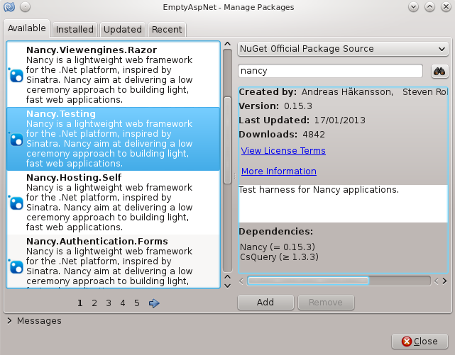
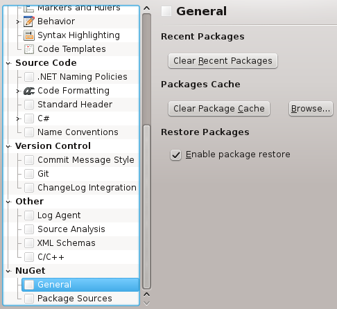

MonoDevelop NuGet Addin 0.4
New Features
Manage Packages Dialog
The Manage Packages dialog has been updated to support paging through the list of packages. By clicking the arrows and numbers, on the bottom left under the packages list, you can move to a particular numbered page, the next page or the previous one.

The package information on the right hand side of the dialog now includes a Dependencies section which shows the NuGet packages that the currently selected package depends on.
General NuGet Options
There is a new options panel for general NuGet options. This options panel can be viewed by selecting Preferences from the Edit menu, then selecting NuGet and General on the left hand side of the Options dialog.

The options panel can be used to enable or disable NuGet package restore. This updates a property in the NuGet.config file which can be found in your ~/.config/NuGet/ folder.
The NuGet packages cache can be cleared from this option panel by clicking the Clear Package Cache button. The Browse button will open the folder where the NuGet packages are cached.
The recent packages list in the Manage Packages dialog can be cleared by clicking the Clear Recent Packages button.
Bug Fixes
- The Last Published Date is now shown without the time in the Manage Packages dialog.
- web.config transforms are now being applied when a NuGet package is installed. Previously the addin was not recognising the project as a web project and not applying the transforms. There is still a bug with transforms creating a new web.config file instead of updating the existing file due to a filename case sensitivity problem.
Download
The source code for the addin is available on GitHub.
The addin is also available to download from a custom MonoDevelop repository.